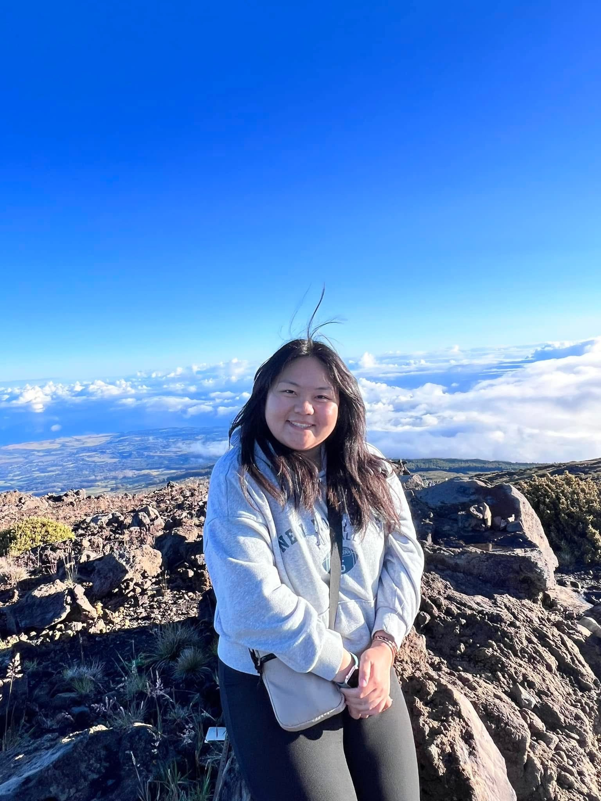
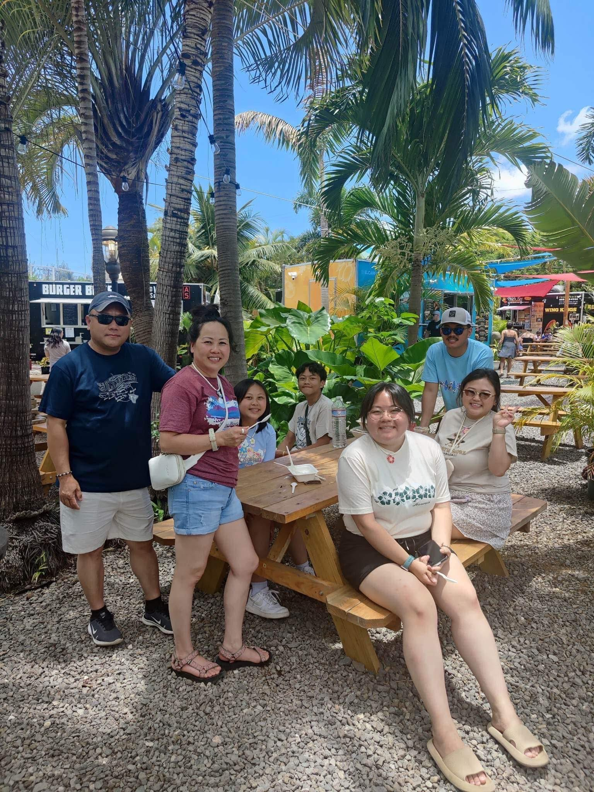
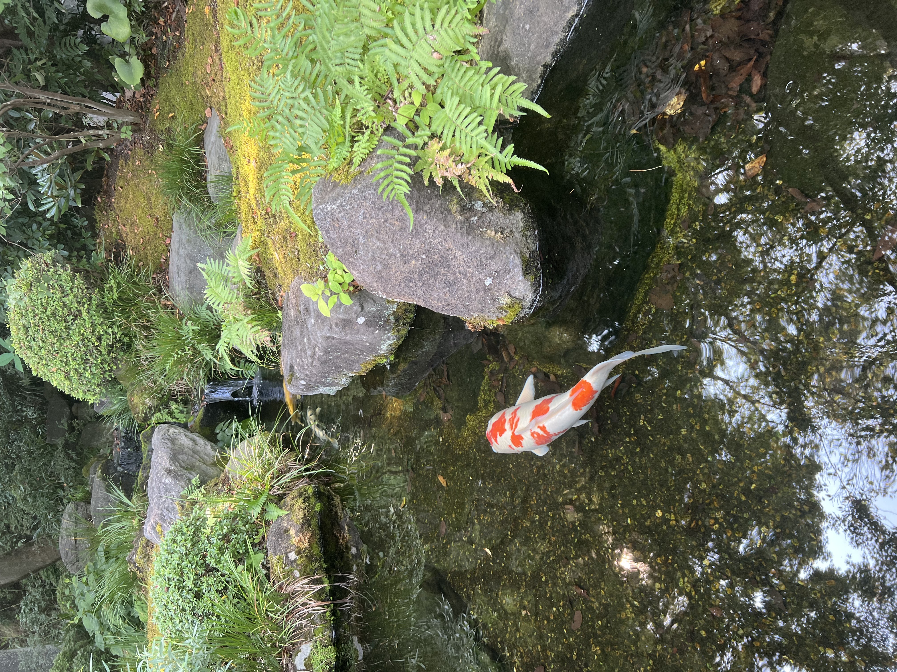
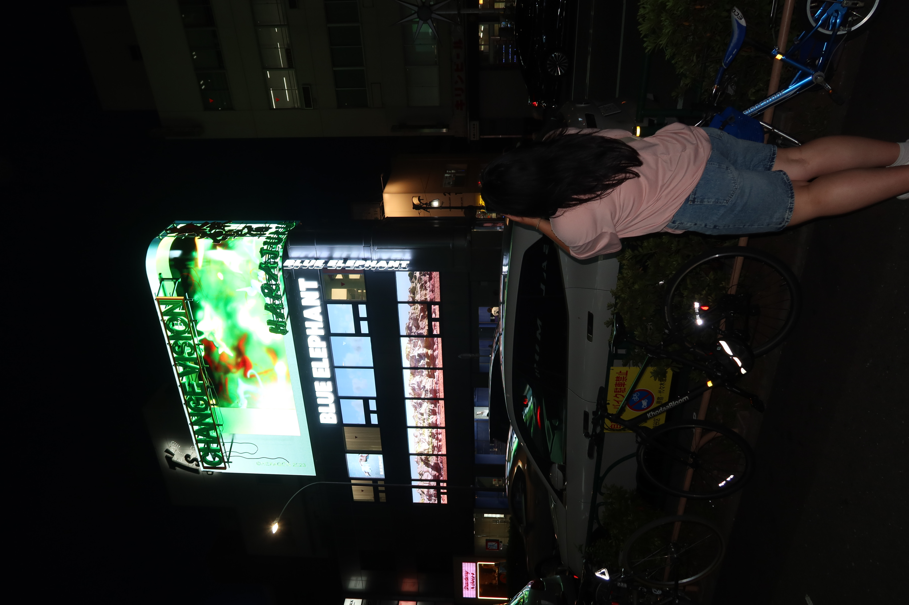
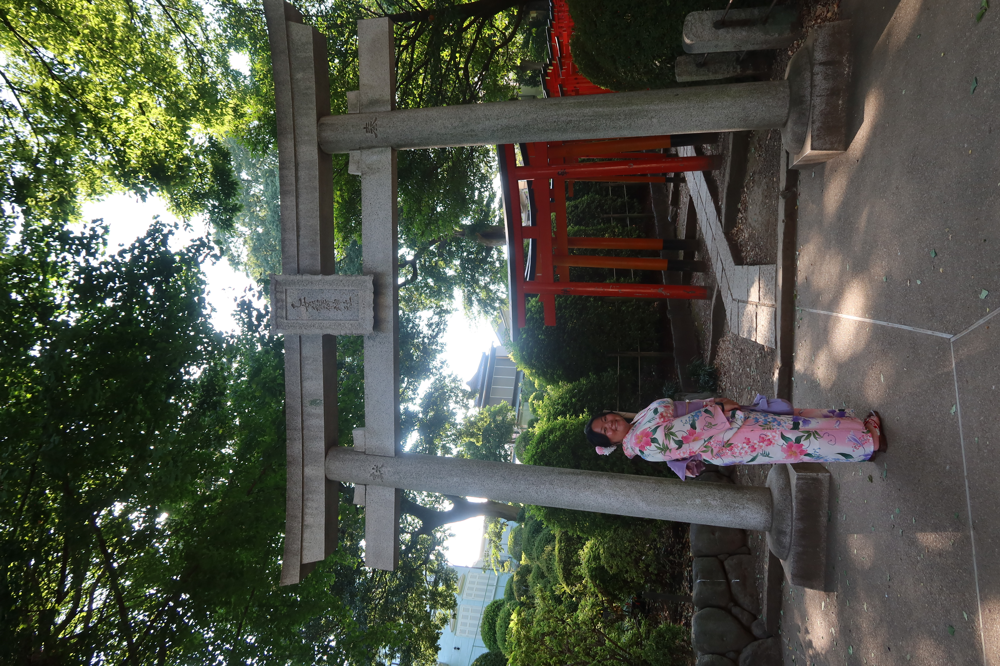

Individual picture on top of one of Hawaii's mountains.

I traveled to Maui, Hawaii about two year ago. It was so much fun, so here are some pictures from HAWAII!~
Individual picture on top of one of Hawaii's mountains.

Look at the beautiful sunrise in Hawaii! This picture was taken at 5AM in the morning!
Food trucks are super popular in Hawaii! Here is a picture of my family and I having lunch at a food truck location.

Traveled to Japan with friends this past summer and had a blast! Here are some pictures from Japan!~
There were so many koi fishes at the temples in Japan!

Exploring Shibuya, Japan at night = HIGHLY recommend!

Decided to wear a traditional kimono while exploring Japan's temples! Such a good experience.
